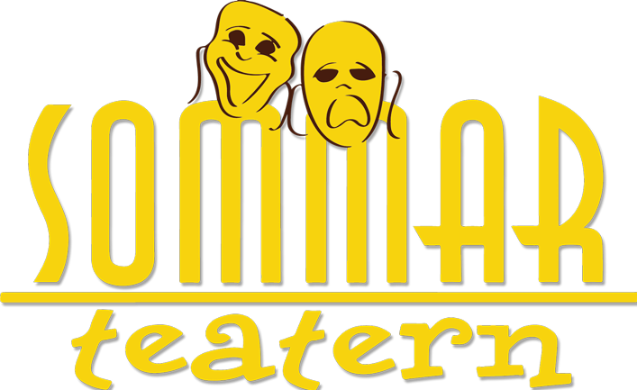

Sommarteatern Ystad
Sommarteatern Ystad är en professionell utomhusteater som varje sommar sätter upp nya föreställningar i Öja, mitt utanför Ystad. Det är dock Teaterskolan som är husets mest flitiga verksamhet — omkring 250 deltagare kommer varje vecka i olika grupper för att träna och öva teater, dans och sång. Huset fungerar även som replokal och kontor för Sommarteatern.
Besök deras hemsida →